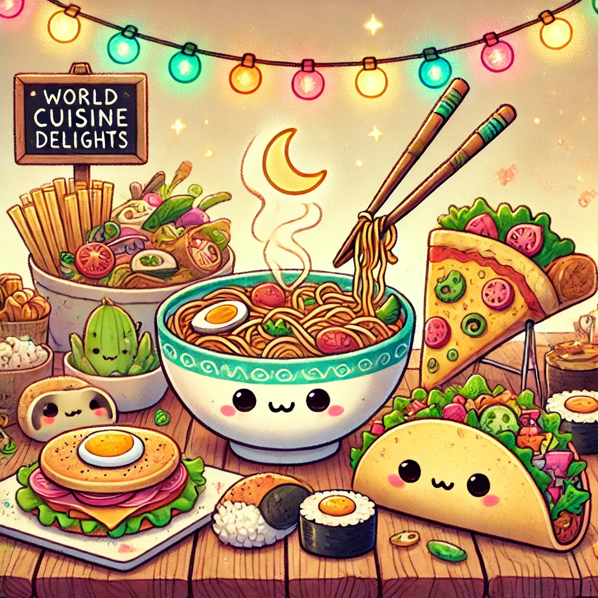

Food is more than just sustenance; it is an experience, a journey through cultures, history, and traditions. One of the most exciting culinary trends in the modern world is fusion cuisine, where chefs creatively combine elements from different culinary backgrounds to craft something extraordinary. What is Fusion Cuisine? Fusion cuisine is the harmonious blending of flavors, ingredients, and cooking techniques from diverse cultures. Whether it's a Mexican-Korean taco or an Italian-Indian pizza with tandoori toppings, the magic of fusion cuisine lies in its ability to break barriers and create something truly unique. The Origins and Evolution Though fusion cuisine may seem like a recent phenomenon, it has deep historical roots. Trade routes, colonization, and migration all contributed to the blending of food traditions. For example, Chinese-Peruvian cuisine, known as Chifa, emerged when Chinese immigrants introduced their cooking techniques to Peruvian ingredients in the late 19th century. Popular Fusion Dishes Around the World Sushi Burrito – A delightful mix of Japanese sushi and Mexican burrito, combining fresh fish, rice, and seaweed in a convenient handheld wrap. Ramen Burger – Instead of a traditional bun, this burger features crispy ramen noodles, giving it a delightful twist. Butter Chicken Pizza – A beautiful blend of Indian and Italian flavors, where creamy butter chicken meets crispy pizza crust. Kimchi Tacos – Spicy, fermented Korean kimchi pairs perfectly with classic Mexican-style tacos.
Why Fusion Cuisine is Here to Stay Fusion cuisine represents innovation and experimentation. It allows chefs to push the boundaries of traditional cooking and create dishes that appeal to global palates. In an era of international travel and digital connectivity, food lovers are eager to explore new and exciting flavors. At its core, fusion cuisine is about bringing people together, celebrating diversity, and creating memorable culinary experiences. So, the next time you dine out, dare to try a fusion dish—who knows, it might just become your new favorite!
